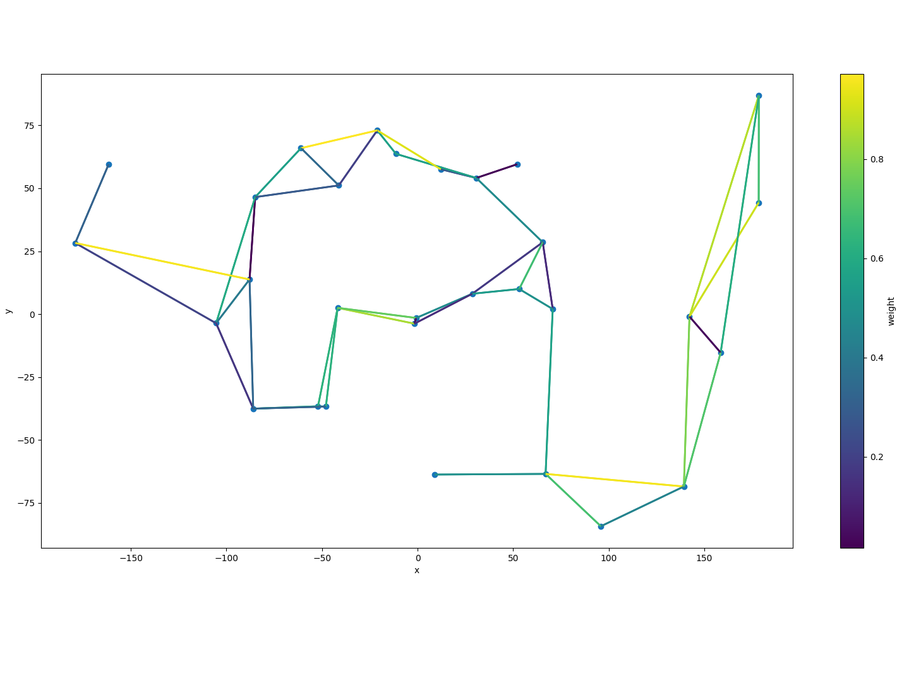

Recherche de plus court chemin dans un graphe en apprentissage par renforcement
Article

Contexte général
La recherche du plus court chemin (shortest path) est au cœur de nombreux algorithmes et applications de graphes. Habituellement, les algorithmes Dijkstra et Bellman-Ford sont utilisés dans ce type de résolution de problème. Ce projet a pour but d’implémenter et d’entraîner un modèle d’apprentissage par renforcement qui serait capable de trouver le plus court chemin entre deux sommets dans un graphe dans le contexte d’optimisation de trajet en voiture.
×

Travail réalisé
- Implémentation d'un gestionnaire d'environnement adapté aux besoins de l'étude.
- Représentation du graphe avec des noeuds et des arêtes aléatoires.
- Définition des coordonnées en 2 dimensions pour les noeuds.
- Attribution de poids aux arêtes (représentant le temps de parcours estimé).
- Génération aléatoire du graphe en minimisant les croisements d'arêtes.
- Normalisation des coordonnées des noeuds selon l'approche Z-Score normalization.
- Mise en place d'une méthode pour déterminer aléatoirement un nouveau trajet optimal à chaque épisode.
- Conception et mise en œuvre d'un algorithme d'apprentissage par renforcement adapté au problème.
- Adaptation de l'algorithme de la littérature pour une utilisation asynchrone de n-step Q-Learning.
- Synchronisation des modèles behavior et target globaux à chaque n-step.
- Parcours du graphe par chaque thread et accumulation des erreurs selon les valeurs retournées par les modèles.
- Mise à jour des paramètres de l'algorithmes.
- Test et évaluation de l'algorithme proposé sur différents paramètres et tailles de trajectoires optimales.
- Définition des paramètres d'entraînement, notamment les architectures de réseaux de neurones, les optimiseurs,...
- Entraînement du modèle sur un graphe de 20 noeuds avec des itérations sur 8 threads.
- Test de plusieurs fonctions de récompense et analyse de leurs impacts sur les résultats.
- Évaluation des performances de l'algorithme en fonction de la taille des trajets et comparaison avec d'autres méthodes telles que Dijkstra.
Résultats obtenus
- La majorité des trajets courts (1 à 5 transitions) sont optimalement trouvés.
Technologies utilisées
Logiciels
- Git
- Anaconda
Langages
- Python
- PyTorch
Technologies
- Apprentissage par renforcement
- Algorithmes n-step Q-Learning
Méthodes
- Deep Reinforcement Learning
- Analyse de graphes
Restons en contact !
Merci d'avoir consulté mon profil. Si vous souhaitez me joindre, vous pouvez utiliser les coordonnées ci-dessous.
Adresse:
Léo BACKERT6 Chemin des Aulnes
67120 Dorlisheim, France